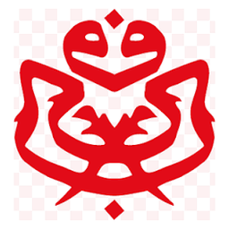

?
Pemain
Ahli Biasa
2026
- Negeri–
- Bahagian–
- DUN–
- Cawangan–
- Umur–
📜 Satu acara menunggu keputusan anda.
Buka tab ini untuk memuatkan peta...

Nusa Politik UMNODimainkan melalui Spotify (perlu internet; log masuk Spotify untuk lagu penuh). Senyapkan audio permainan jika bunyi bertindih.